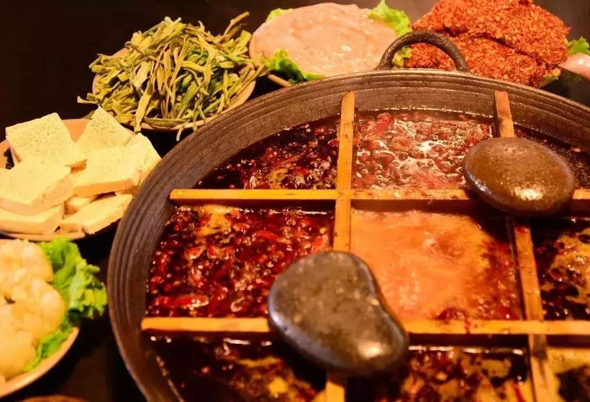
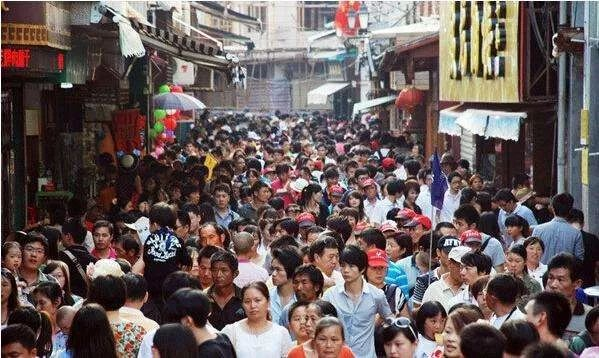

自掏百万给员工发工资，熬过去希望是春天
原文链接 备份链接 一场疫情，把不少企业的节奏打乱，旅游业首当其冲。 两三天从高峰跌到低谷，不少企业主称无法作出反应。有民宿老板为春节多买一个冰柜，购置大量鸡鸭、鲜奶；有企业从早到晚开会，讨论春节高峰的应对……这些忙碌的横切面都矗立在1 …

文/何星莹
编辑/单一
疫情吸引了绝大部分视线，但在公众关注之外，余波还在继续。
受疫情影响，消费者纷纷取消春节期间的出行和聚餐计划，旅游业和餐饮业首当其冲，不少从业者苦中作乐调侃自己“暂时被官宣失业”。
年前囤积的物资浪费，停工停产造成订单损失，以及租金和工资的压力，都是悬在头顶的几把利剑。
复工日即将到来，但这次疫情的影响却无法在短期内消弭。长远来看，一、二、三产业无不遭池鱼之殃。
中欧众创平台的一份调查结果显示，受疫情影响，如果没有政府和银行支持，85.01%的企业维持不了3个月生存；如果疫情持续半年以上，90%的企业将难以为继。
中小企业哀鸿遍野，正常的产业链节奏被打乱，企业老板的焦虑更难以掩盖：担忧疫情以外，还需忧虑自己的企业是否已到生死存亡时刻。
他们或乐观接受，或平静自救，或绝望寻不到出路，但考虑的大多是：我该如何多扛一会儿？
并不是全然没有好消息。
2月1日，中央五部门联合发文，将加大对疫情防控相关领域的信贷支持力度，不得对受影响较大的行业盲目抽贷、断贷、压贷。除此之外，浙江、山东、黑龙江等地已经出台相关政策支持中小企业渡难关。
以下为四位企业主在疫情期间的亲身经历，由锌财经采访编辑。

文旅行业：损失最惨重，捐款最积极
2月3日
中海创文化产业发展有限公司
董事长 徐鹏
物资、人员，加上前期撒出去、收不回来的广告费，直接经济损失约有1200万。
腊月二十三一期竣工，腊月二十八试营业，正月初一停业。
从创业开始，我做的就是文旅的活动、策划，如今在成都、武汉、重庆、香港都有文旅项目和公司。今年，响应国家乡村振兴的号召，公司在北方做了一个人文小镇的项目。
小镇今年5月份就开始打地基，本来想赶国庆档，但是北方环保天气不能施工，实在赶不上，就加班加点想要收割今年的春节档，文旅项目一般就是过年开业最好，人又多，东西又齐全。
这个小镇总投资约几个亿，一期4000万，占地几百亩，这样规模的一个项目正常施工需要七、八个月。竣工是在腊月二十三，扣除不能施工的阶段，项目建设只花了四个月。时间节省了差不多一半，背后的代价是钱。
在当地，我们原原本本还原了一个重庆小镇，有重庆火锅、重庆江湖菜，计划还有足浴、住宿等等。正式开业前，火锅店的春节预定就已经过百万，最后被迫全部取消。

图源网络
腊月二十八，小镇开始试营业，我还在国外旅游，每天都有好消息报告上来。得知疫情之后，本来打算初八过去看看，但是大年初一突然告诉我要全部封闭，我就蒙了。
由于我们当时提前准备了菜品、年货、生鲜，包括加班的一百多个工人是重庆调过去的，全部都是三倍工资并且提前付款了。
停业之后，大年初一就从重庆派车去把这些加班的员工给拉了回来，飞机、高铁都不敢让他们坐。
提前准备的物料能放冻库就放冻库，那些生鲜，那些鱼、海鲜、龙虾就完蛋了。后来我们就去附近的村里用大喇叭宣传、给点钱就卖，谁家能用，谁就拿。
乡村振兴本来就是农村的荒地，我去哪找人？我送谁敢收？那个村里只有一两百人，物资很多都烂了，绝大多数都当垃圾处理了。

图源网络
物资、人员，加上前期撒出去、收不回来的广告费，直接经济损失约有1200万。
突然停业，一定会有坏账成分，我们是运营方，同时这一个小生态圈也全部瘫痪了。举个例子，小镇里有固定的演出活动，现在包括活动公司，以及下游的广告制作公司、舞台搭建公司、运输公司全部喊停。
再往下游说个最简单的，拾荒的老太太原来卖四个瓶子卖一块钱，现在都捡不到瓶子。
虽说倒霉，但我心态挺好，捐了三万现金和五万多的医疗物资，还牵头组织了两场募捐，为重庆的定点医院筹款两笔，共计近二十万元。我们做生意的，只要停下来就很难受，给自己找点事干。
我们这个行业，受损失最惨重，捐款捐得最积极，大家都希望赶紧过去。
现在是不开门，是稍亏损一点，我担心的是疫情控制住了，人的心理什么时候能恢复。以后开了业，短期内谁还敢出来吃饭、聚众旅游？前期损失我能算，但是后期损失无法估计。

图源网络
大的灾难来临都会毁掉一批行业，再起来一批。但是我觉得文旅虽然今年会很难熬，但一定会起来。文旅是体验式的，消费心理如果恢复了，压抑了这么久，爆发性增长也很快。
就看今年能不能扛得住了，很多同行基本上都是贷款发工资。我们这个行业的痛苦点在于，我们是跟客流打交道的，这一点，政府出政策我们也不太好运用。
今年先撑一撑，上不负资本方，下不负供应商。开不了门，一直花钱耗在这里也不行，日子得过，今年下半年我可能考虑投资教育作为备选。

外贸纺织业：雪上加霜
2月1日
广东某外贸工厂老板 林洁
“在世卫组织宣布之前，我思考的是如何熬过2020；在他宣布之后，我思考的是如何遣散工人，如何安顿好年纪大的师傅，如何卖掉工厂设备……”
四年前，我从原来的工作辞职，接手了我母亲经营了将近二十年的服装生产工厂，厂里有四五十个工人，七十多台机器，在当地算是中等偏上的规模。
我们主营业务是外单，外贸近几年已经是非常难做了。我刚接手那一年，工厂每个月可以盈利，但这几年仅仅能跑开支。
去年开始贸易战，很多北美的客户已经不会再找我们来下订单了。如果我们一件衣服报10块钱的加工费，他们可能会选择越南、泰国、柬埔寨这些地方。同样的报价，但是关税完全是不一样的。

图源网络
整个服装行业的春节安排是：年前不断地在赶货，把实体内单的活全出完了。
外单的货是年后交的，初七或初八就正式开工，外省的工人们会在初十回来。
当第二次推迟上班，以及世卫组织发文之后，我再次感受到了事情的严重性。他们官方的说法是“不建议限制贸易和人员流动”。这是一种很委婉的说法，可以从其他国家陆陆续续停止来中国的航线侧面看出他们的态度：我们拒绝。
贸易也一样，如果不是必需品，他们可以去别的地方采购、加工。
我有三个客户，分别是英国、韩国、南非的，本来初十会带上样版飞过来下订单，来探讨一下款式和价格。但他们现在已经取消了行程，告诉我“希望你们的疫情赶紧过去”。
南非的订单量非常大，一次订单量就是20万件，而且结货款非常守信用，30%的订金，中间40%的货款，发完货之后再结30%，很少有这么好的客户。
疫情对纺织业的影响是一个骨牌效应。
1.影响资金链
我年前有一个做童装的客户，光在我们一间工厂就备了300万的货。过年的那段时间，很多物流都停了，很多人愿意带孩子上街逛街，这批货是他备过年期间的货。但过年期间人都没有一个，等于他这300万直接变成库存。
库存不是钱，库存就是一堆废纸。因为没有现金回流，他没办法给我结加工费，但我给我的工人已经是结了钱，才让他们回去的。
但我还要交房租，还要付工资，设备还在折旧。
2.固定开支
我算了一下，工厂每停一天固定开支四万块钱，包括仓库费用、厂租、固定的人工，以及设备折旧。但法定假期与正式复工期间的工资怎么结算，我也还没想好。
我租了八百多平的工厂场地，租金每个月将近五万。看到网上很多减免租金倡议的链接，我转发给工厂房东看，希望能适当减免一点押金。
他说：不行，也不关我的事。后来又找了他几次，他没再接我电话了，微信回我说：减不了，银行没有减我贷款，我也不可能给你减。
当然我能理解，毕竟他也是私人业主，而且事关自己利益，抵抗风险能力也不像大集团一样强。
3.复工难
国家说要2月10日之后复工，我打遍了工厂所有人的电话，告诉他们可能要停工到3月份了。当地做服装纺织业的，工人很多都是江西、湖南、湖北，他们回到了老家之后封路了，可能3月份才能出行。
去年12月10日我们停止接单了，并且跟客户表明所有出口订单只能在2月交，因为要迎接春节消费假期。在第二次推迟春节假期以及世卫组织发文前，客户来联系我时，我回复说：“2月份依然可以交出第一批订单。”
但现在完全无法开展。我打算今天给每一个外单客户重新写了邮件，不知道他们会不会追诉我的赔偿。我想，在这个行业，大部分都是理解你，但没办法等你。因为换季换得很快，我没办法把服装做出来，他们就会把订单移到柬埔寨、老挝，或者泰国。
不知道需要多久，工厂才能恢复原来的水平。
首先，我的工人要3月才能回来，而且我需要去布行采购原材料，如果布行有存货我可以直接去拖，如果客户所需的布料需要订做，还涉及到布行的产能能不能跟上。
布行的产能没跟上来，那就算我的工人回来了，我的机器开了，那我做什么？
很多工厂在做电商的订单，或者转型做直播，影响不会太大，但对我来说，做直播会影响到我的实体订单客户，外贸业务占了70%，影响是非常大的。

图源网络
4.如何扛下去？
我考虑过节约成本，但实业很难，如果裁员可能面临员工不够、无法按时交货的问题。虽然有些产能可以机器代替，但是在服装上，“无人车间”现在并没有办法普遍。
我母亲当年也经历过非典，原来规模有八十多个人，可以接羽绒服订单，但在那之后，员工变成了二十多个，无法做流水线，只能接小型的加工。慢慢发展了十几年才发展到了如今的五十多人。
但人生有几个十几年？
我有个客户，他在广州十三行的租金是25万一个月，他说我可能撑不下去了，但你的加工费我会分期给你。这意味着他在考虑解散，经过这件事情，真的只有非常有实力的人才能扛过这一关，我现在也在考虑要不要解散。

图源网络
龙头撑不下去了，银行会松一下贷款，中小企业能拿资质去贷款，我这种干工厂的，真的很难享受到一些政策。我如果扛不住了，我的工人怎么办？
如果我卖掉工厂，大不了就当作赔了一百万，回公司去上班。但是有几个老工人，从跟着我妈到跟着我，产能已经很低了，在别的厂里只能当零工，混个温饱。在我这里，他们还能做一下尾补和后勤，工厂效益特别好时每个月也能拿两万多。
我解散了他们怎么办？已经没有服装厂可以接纳他们了。

酒店民宿：现金流断了也得撑
2月1日
余丰里民宿创始人 金勰
疫情对于酒店民宿行业，最直接影响了春节这个旺季，不存在订单这个问题，就直接关门。
2016年的时候，市场上还比较讲情怀，民宿行业也比较热，我就进入了这个行业。
我是台州人，附近有个“台州府城”景区，我们响应景区的号召，在这里打造一个高端民宿“余丰里”，把书店和民宿组合经营，作为景区的高端配套。
光情怀讲故事吸引不了客人，还得有自身独特的东西以及过硬的品质，所以我们找个一个百年的四合院，然后还有四栋60年代的仓库，把这一个老的历史建筑区进行改造。

受访者提供
耗资两千万的装修费，耗时三年多的时间精雕细琢，2019年的8月初“余丰里”终于准备进入试营业状态，谁知道几天后，遭遇了利奇马台风，损失严重。
以前做为直播记者来报道台风，没想到后来作为受灾者接受原先同事的采访。
虽然民宿的地势高，但四合院室内也被淹了半米有余，后勤仓库、动力柜、配电箱被淹，电气设备基本报废，书籍家具受损严重，光书的损失就有三十几万，总的损失近百万。
被淹了以后我们又花了小半年的时间开始重新清理、修复，并且在今年年初的时候拿到了各种许可证，准备正式营业了。

受访者提供
春节前，原先在线上订单就已经有近十万。一开始大家还是观望的状态，还来咨询，大部分人的出行欲望还是比较强的，再三考虑决定继续出行。
但是在除夕和初一，突然所有的订单都退掉了。
本来以为只是人流量会有部分减少，没有想到会是直接停业的状态。但看到疫情严重性的时候，我们也主动打电话给没退的客户，要求他退掉，然后给员工放假。
得知要停业后，我们也有一丝犹豫。我们弄了这么久，经历了这么多磨难坎坷，终于能开门迎客，但是现在面临疫情，我们一定要配合各项工作，不能存在侥幸心理。疫情早日结束，我们才能重振旗鼓。
一来一去，员工工资加上租金，春节期间估计损失几十万吧，也没心情去细算，都在关心疫情。
经历过两次“黑天鹅”，但我们现在心态还比较稳定，疫情得到控制并且结束是早晚的问题，这个行业也是靠长期的。而且在经历台风的时候，当地政府和银行给了我们比较大的扶持，比如部分房租的免租，以及当地农商行主动给了我们信贷支持，基准利率，当天到账。
疫情对于酒店民宿行业，最直接影响了春节这个旺季，不存在营业额高低的问题，而是没有任何收入。
从长期的影响来说，疫情的结束到底需要多少时间、旅游市场什么时候恢复，谁都没个准。但酒店又是一个持续投入、重资产的行业，不可能把员工全都放掉，只能靠自己硬撑。

图源网络
我在杭州也有几家在西湖边的民宿，那边的房租已经跟钱江新城一线写字楼的房租几乎是持平，而且水电、员工等费用支出更高，而且民宿市场一直在走下坡。如果没有和房东沟通好，接下来经营压力非常大，甚至直接倒闭都是有可能。
杭州的民宿协会已经给房东发倡议信，也希望有相关部门或者协会出面沟通，让房东能降租或者部分免租。

餐饮行业：救己与救他
2月3日
质馆咖啡创始人 郑松茂
本来2月份就要开新的店，现在可能会影响。不过我没有那么急。
面对顺境跟逆境我们都是要务实地去面对，尽快渡过疫情这个难关才是终点。
多年以前，我从台北来到上海，之后创办了质馆。在质馆成立后的六个春节里，我们都是正常营业的。
最大的店已经开了5年，有三层楼，还有室外的座位，通常节假日都是爆满的，最小的店就是才9平米。疫情最大的影响就是咖啡馆歇业，暂时就不开了，它根本就没有数字，是零。
部分店面被减免了每个月的广告费、推广费、物业费，但比例很低，因为90%以上还是租金，目前好像没有减。
这几天，西贝、外婆家的老板都接受了一些采访，贾国龙本来以为现金存量很高，但没想到也受这一波的影响，抵挡不了超过三个月。质馆现在的规模没有像他们那么大，所以压力也不会那么大。

图源网络
这是我们经营者必须学习的一课：风险随时会来，你必须有准备。
本来2月份就要开新的店，现在可能会影响。不过我没有那么急，现在开的店还在在积累自己团队的经验，还没开始做复制。
我在1月16号就回台北了，是在微信上有顾客群得知国内的疫情的，但是我对疫情相对比较乐观。很不幸疫情发生在我们国家，但是我们也很有幸能比其他国家更高效率地处理这个难题。
不客气地说，我们团队里的小伙伴们，他们对医护人员的很善良，给上海各医院送了共几百杯咖啡，上面写了“上海加油、肺炎必败”等话语，还有门店把店里的百余包挂耳库存都送上，都让我觉得很热心。
我们现在的心结不在“损失”上面，作为一个企业的经营者，我觉得我们最基本、最重要的训练就是，面对顺境和逆境都要务实地去面对，尽快渡过疫情难关才是终点。
*应受访者要求，文中林洁为化名。


原文链接 备份链接 一场疫情，把不少企业的节奏打乱，旅游业首当其冲。 两三天从高峰跌到低谷，不少企业主称无法作出反应。有民宿老板为春节多买一个冰柜，购置大量鸡鸭、鲜奶；有企业从早到晚开会，讨论春节高峰的应对……这些忙碌的横切面都矗立在1 …
原文链接 备份链接 *************▲*************玉龙雪山脚下的玉湖村。 （受访者供图/图） 全文共*4244*字，阅读大约需要10分钟。 在求助信里，我写了四样求支援的物品，是因为我只知道这四样。而实际情况 …
原文链接 备份链接 今日立春 疫情形势严峻 不盲目歌颂 不滥抒情 要说真话 要做实事 我们致敬那些在前线与病毒抗争的英雄。作为摄影师，我们尤其致敬在前线用镜头记录这个事件的记者和摄影师们。但我们知道，这毕竟是一场特殊的战斗，并不是每个人 …
原文链接 备份链接 - 疫 情 之 下 - 只有在这样的特殊时刻，我们才体会到平平常常的日子是多么美好，多么幸福…… ” 疫情爆发得如此迅猛，让所有人始料未及。 己亥年腊月二十九，公历2020年1月23日，我去单位上年前最后一天班，那时我 …
原文链接 备份链接 “新冠”肺炎像一把刀子，不仅伤及血肉，更剖开了深入骨髓的病灶。清醒的人们必须发出声音，说出真话。今天来信的作者吴俊宇来自江西宜春。在过去一段时期里，伴随全国经济飞腾的大潮，宜春也创造出一幅繁荣景象。不料疫情到来，小城 …